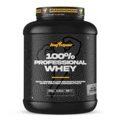

En rupture de stock100% Professional WHEY
Description
79,80 €
La 100% professional whey (2kg) est conçue par la marque de nutrition sportive espagnole Bigman.
Cette protéine de lactosérum professionnel constitue une formule protéinée composée à 100% de concentré de sérum de lait instantané obtenu par ultrafiltration.
Avec un pourcentage de protéines par dose atteignant plus de 77%, elle se distingue par sa haute teneur en acides aminés favorisant le développement musculaire, tout en améliorant efficacement la récupération.
Grâce à des procédures ultra et microphiltrées ainsi qu'à une purification enzymatique, cette protéine présente une faible teneur en matières grasses et en lactose, tout en contenant des microfractions de protéines essentielles.
Les protéines contribuent à augmenter et à maintenir la masse musculaire, ainsi qu'au maintien d'une ossature normale. Une concentration élevée en BCAA, avec 11,66 g de L-leucine, 6,5 g de L-isoleucine 6,5 et 6,1 g de L-valine.
Ces acides aminés sont indispensables pour le développement des muscles et favorisent la récupération.
La 100% Professional whey est conçue pour une utilisation tout au long de la journée, avec une absorption facile et rapide par l'organisme.
Son faible contenu en glucides, et moins de 2 g de sucre par dose, favorise la perte de graisse et offre une définition musculaire accrue.
Elle convient particulièrement à ceux recherchant des sources alternatives de glucides.
En résumé, ce complément protéiné haut de gamme est à la fois faible en matières grasses et en sucres, dans de délicieuses saveurs et facile à digérer.
Disponible en plusieurs délicieuses saveurs : Chocolat et Fraise Banane.
Produit avec édulcorant(s)